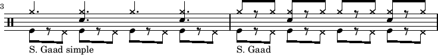

suivant: Bossa Nova - 05/11/2019 monter: Cours 2018-2020 précédent: Africain (2) - 08/10/2019
En évoquant le concert de “Transe Kabaré”, on parle de musique Maloyan mais aussi de morceau où la pulsation en 12/8 peut s'entendre comme une mesure à 4 temps (ternaire) ou 3 temps (binaire). Ce qui fait travailler le 3 pour 4. On peut le penser en “tak ta-ti ta ti-ta”, chaque main joue une pulsation et on compte soit trois, soit quatre en alternant. Ensuite, une fois qu'on a la pulsation, on peut jouer un pattern... Puis changer de pulsation :o)
